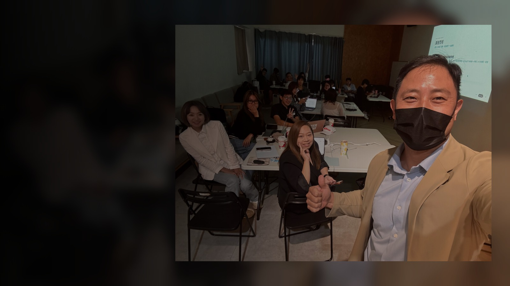
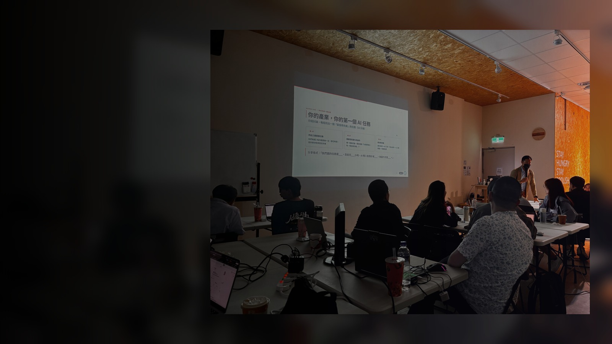
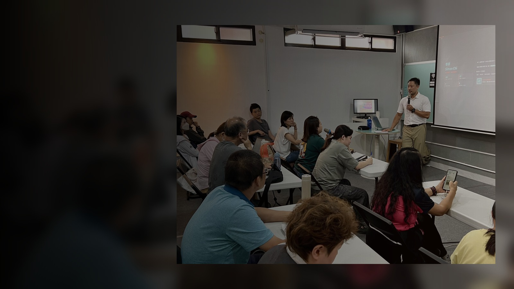
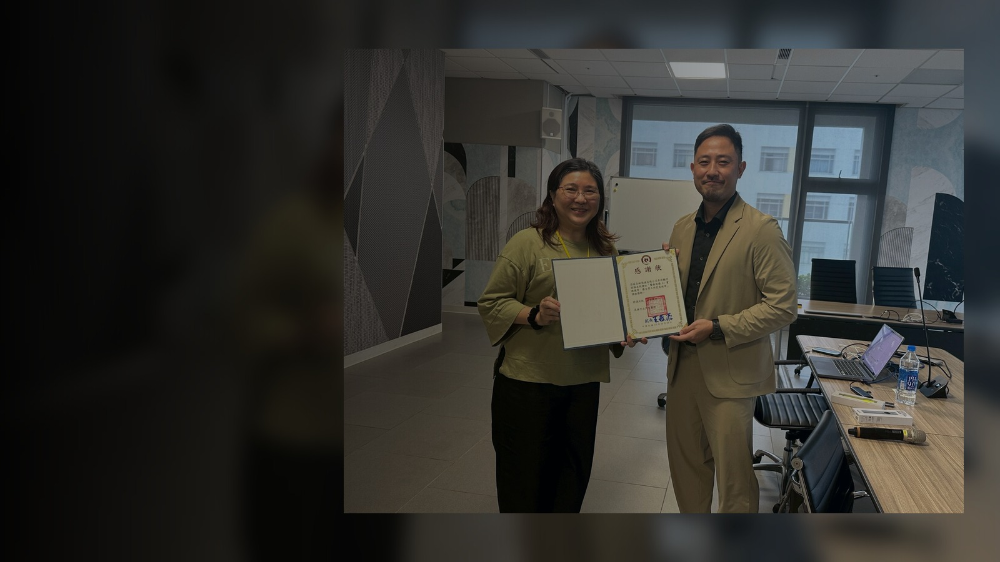
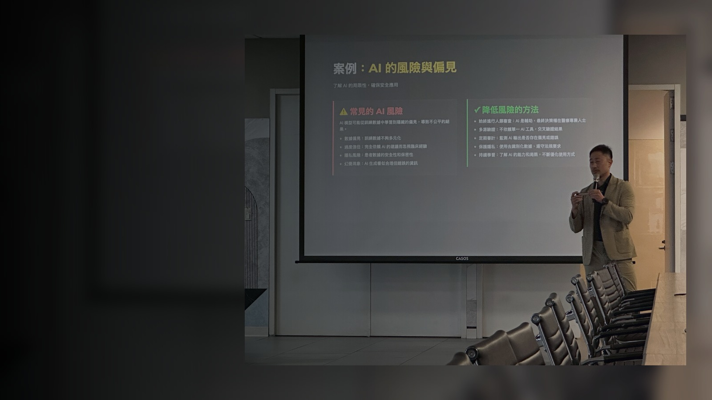
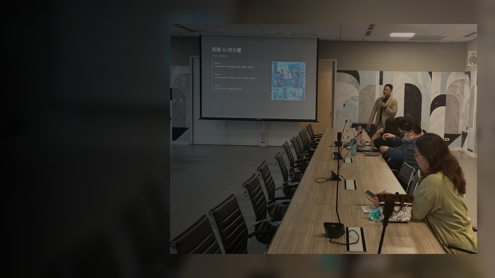
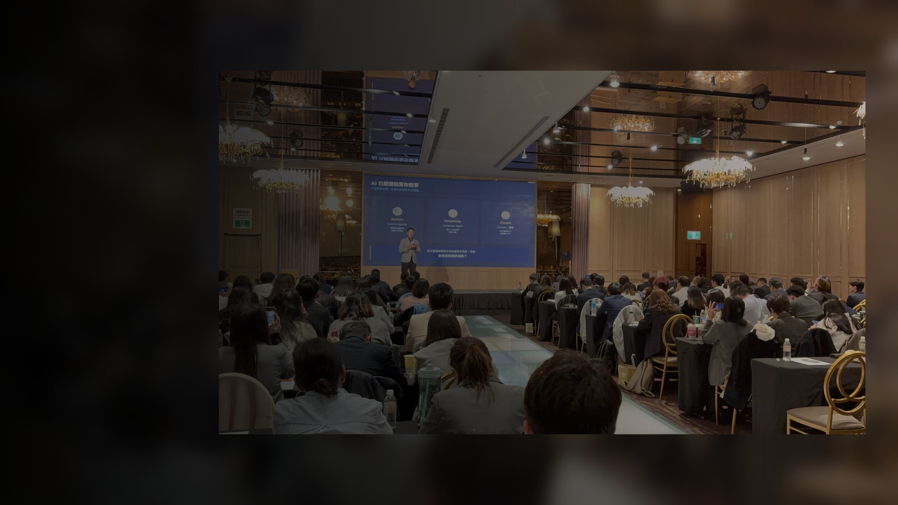
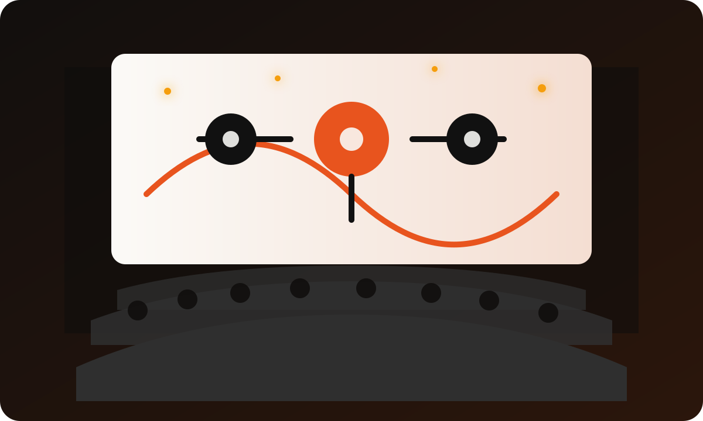

← 返回
叫 AI 來幫我 · 上午場 / 09:00–12:00
AI 不難，
手機就能上手
用手機學會 ChatGPT / Gemini · 從公文到生活，都能請 AI 幫忙
6 小時
台中市議會 國際會議廳
2026.07.21
AM
季祥
Simon Chi
AI 實戰顧問 · 企業 / 公部門培訓講師
PMPPMI-ACPAWS Certified
Google CloudAzureISO 27001
HP → 趨勢科技 → 外商 AI 專案主管 → 創業。也帶過台南文化局、勞工局志工這類公部門場次。
我設計課程的標準只有一個：你今天離開會議廳的時候，手機裡要有一個真的會用的東西。
不用背指令、不用懂技術，跟著操作就好。
加入「Simon AI 學員社群」
今天的投影片、提示語、後續問題都會放在這裡，掃碼先加入
實績 · 不是第一次上場
過去實際授課現場
帶過的場次，這些是真實的課堂照片







課前準備 · 現在就做
先掃這個，把帳號辦好

Manus 申請
下午會用到，現在先申請
今天上午你需要
✦
ChatGPT / Gemini App
還沒下載的，現在打開 App Store 搜尋
🟣
Manus 帳號
左邊 QR 先申請，審核需要一點時間
TODAY'S RULES
今天的遊戲規則
六小時，分成上午兩堂、下午兩堂
- 第1堂 09:00–10:30 AI是什麼、怎麼跟AI說話破解迷思，學會問問題
- 第2堂 10:30–12:00 工作場景實戰公文、會議紀錄、通知信，動手做
- 第3堂 13:00–14:30 三工具PK：ChatGPT / Gemini / Manus認識會自己做事的 AI
- 第4堂 14:30–16:00 生活場景 + AI的紅線把AI用在家裡，也搞懂什麼不能用

第 1 堂 · 09:00–10:30
AI 是什麼？
怎麼跟 AI 說話
現在 AI 圈在吵什麼 · 這幾天剛發生的事 · AI 世代進化史 · 為什麼AI會說錯 · 提問技巧與迷思破解
暖身 · 開場話題
AI 圈最近
在吵什麼
三個常上新聞的話題，接下來一個一個聊
01–03
01
話題一 · 最常被討論
「AI 會不會取代工作」
最容易被誤解的一句話
聳動的說法
新聞標題常寫「AI取代XX%工作」，聽起來很嚇人，但通常沒說清楚是「取代整份工作」還是「取代工作裡的某些步驟」
比較準確的說法
AI 取代的是「重複性、格式化」的步驟，例如打草稿、整理資料；判斷、負責、人際溝通這些部分，還是要人
今天上完課，你會有自己的答案——不是我告訴你的答案，是你今天實際用過之後的判斷。
02
話題二 · 版權爭議
「AI 生成的內容能不能用」
全世界都在打的官司
紐約時報 v. OpenAI
告 ChatGPT 沒授權就學走新聞內容，2023年底打到現在還沒判
Getty Images v. Stability AI
圖庫告圖像生成平台，性質類似的官司
對你的原則：AI 產出當「草稿」自己改沒問題；要對外發布、代表機關立場，先確認授權和原創性。
03
話題三 · 真實發生的案例
「AI 詐騙、深偽新聞」
不是危言聳聽，是已經發生的事
聲音仿冒
只要3秒鐘錄音，AI就能模仿一個人的聲音，「主管打電話交代急件」這種詐騙手法已經出現過
假畫面、假新聞
偽造的公文截圖、新聞畫面，肉眼已經很難分辨真假
相關詐騙案件在 2025 年暴增超過 12 倍，全球每 10 個成年人就有 1 人遇過 AI 語音詐騙。（來源：CNN〈AI voice cloning scams are on the rise〉、CNBC，2026年5月）
下午會有專門一段講深偽的案例和應對方式，這裡先記住：多一個「打電話核對」的習慣，比事後補救省事很多。
新知 · 剛出爐的新聞
這幾天
剛發生的事
AI 工具改版很快，不用全記住，知道「有這回事」就好
01–04
01
GOOGLE · 品牌更新
NotebookLM 改名了
正式併入 Gemini 品牌，2026/7/16公告
名字變了，能力沒變：
把資料丟進去，AI 幫你讀、幫你整理、幫你找出處。
這類「文件閱讀工具」特別適合公務員——你們常要處理長篇公文、會議資料、法規條文。
來源：Google官方部落格、9to5Google，2026/7/16
02
OPENAI · 模型更新
ChatGPT 出了新版本
GPT-5.6 於2026年7月9日上線，分成三個等級
來源：9to5Mac、Axios，2026/7/9
白話說：AI又變強了，一般人聊天介面不會差太多——同一天上線的「ChatGPT Work」會自動幫你整合筆記草稿，正好接到下午的Agent主題。
03
OPENAI · 功能升級
「Deep Research」不是不見了
是換了版本，不是拿掉功能
收掉的
2025年2月上線的舊版「深度研究」（當時是用 o3 模型跑）在 2026年3月26日 被正式下架
升級的
功能已經在2026年2月換上 GPT-5.2 模型運作，同年3月又加了連結 SharePoint、OneDrive、Dropbox、Google Drive 的能力，能直接分析你自己的檔案，不只是網路公開資料
來源：OpenAI Help Center 官方公告、findskill.ai〈OpenAI Killed Legacy Deep Research〉，2026年3月
這就是 AI 工具的常態：名字、版本一直換，但核心邏輯——你告訴它清楚的需求，它給你草稿——不會變。
04
資策會 · 2026年趨勢預測
2026 的關鍵字：
Agent、資安、負責任 AI
來源：iThome／資策會，2025年12月
工具會越來越強，但越強的工具越需要清楚的使用規則——這正是今天下半天要講的重點。
FOUNDATIONS · 從查詢到創造
AI 不是更聰明的 Google
兩者的差別，決定你怎麼用它
搜
你熟悉的：搜尋引擎
- 幫你找到「別人寫好」的答案
- 給你一堆連結，你自己判斷
- 資料是死的，不會幫你組合
生
今天要學的：生成式 AI
- 直接幫你「寫出一份新的」答案
- 會依照你的情境調整語氣、格式
- 像一個很會猜、反應很快的新同事
AI 是猜得很準的創作者，不是查詢機器——這句話今天要記住。
新知 · AI 進化三部曲
短短四年，AI 走到哪了
你不用全部記住，但要知道現在走到哪一步
2023
幻覺期
一本正經的胡說八道。好玩，但不敢真的拿來用。
2024
工具期
查資料、寫文案。好用，但你要一步一步下指令。
2026
代理期
深度思考、自主行動。下午的 Manus 就是這一類。
我們不再嘲笑 AI，而是開始依賴它做事——這就是三年內的變化。
CAUTION · 幻覺 Hallucination
為什麼 AI 有時候會說錯
因為它是「猜」，不是「查」
資料
看過很多文字
模型學到語言、格式、常見答案長什麼樣子。
→
猜
預測下一句
它不是查資料庫，而是猜最可能的下一段內容。
→
核
人來把關
日期、數字、法規、人名，送出前回到原始資料核對。
把 AI 當成一個很認真、但偶爾會記錯細節的新同事。
觀念 · 再深一層
AI 不是被「寫」出來的，
是被「練」出來的
傳統軟體：被設計
工程師一行一行寫規則，行為完全可預測——就像一支球棒，怎麼揮就怎麼打
AI 模型：湧現
用海量資料「練」出來的，連開發者都沒辦法完全預測它下一句會說什麼
這就是為什麼 AI 偶爾會出乎意料——它的能力是「長出來的」，不是「寫進去的」，跟核對它的答案一樣重要。
記住這句：AI 幫你把「從零開始」變成「有草稿可以改」，最後一步永遠是你。
新知 · 2026 數字告訴你
AI 現在能做到什麼程度
40%
用ChatGPT寫作，完成任務的時間減少
MIT／Science期刊 2023
95%
近兩年AI模型使用成本的降幅
產業分析彙整 2026
9成
企業已在至少一項業務導入AI
McKinsey 2026
94%
導入AI的企業卻說「沒看到顯著效益」
McKinsey 2026
來源：MIT News〈Study finds ChatGPT boosts worker productivity for some writing tasks〉2023；McKinsey & Company〈The economic potential of generative AI〉2026；Gartner 推論成本預測 2026
最後這組數字才是重點：不是有沒有導入AI，是有沒有用對地方。今天上午剩下的時間，就是要幫你找到「用對的地方」。
新知 · 不是實驗室數字，是真實使用數據
AI公司自己員工怎麼用
來源：Anthropic Research〈How AI is transforming work at Anthropic〉，2025年12月
最後一個數字最有意思：AI不只是把舊工作做快，還讓你多做了原本沒空做的事。
時事 · 台積電就在我們身邊
AI 不是聊天機器人，
是整個產業鏈
聊天視窗背後，是晶片、資料中心、電力與模型能力撐起來的。這不只是軟體圈話題，而是台灣正在參與的產業布局。
來源：Bloomberg、Taipei Times、Fortune，2026/7/16–17
HANDS-ON · 現在打開手機
第一次跟 AI 對話
跟著做，30 秒就完成
- 打開 ChatGPT 或 Gemini App，用 Email 或 Google 帳號登入
- 在對話框打一句話：「用三句話跟我介紹台中市議會在做什麼」
- 看它怎麼回答——它有沒有主動確認你要的細節？
- 再追問一句：「可以講白話一點嗎？」——感受 AI 可以被「調整」
恭喜，你剛剛完成了第一次「跟 AI 說話」。
✏️ 換你打字 · 給自己 2 分鐘
再問一題，換你自己的
想一個你平常會上網「查」的問題
試試這個結構
我想知道[你平常會查的問題]，
用一般人聽得懂的方式跟我解釋，
最後幫我整理成三個重點。
比較一下：跟 Google 搜尋比起來，這次的答案感覺有什麼不一樣？
BEFORE / AFTER · 不只比問法，比結果
同一件事，問法差一點，結果差很多
情境：幫忙寫一封回覆民眾陳情的信
爛問法「幫我回一封信給民眾。」
結果：通用、空泛，看不出在回覆什麼事，長官看了還要重寫。
好問法「我是人事室承辦人，民眾陳情內容是[內容]。請幫我寫一封正式但親切的回覆信，先感謝來信、說明處理進度、附上聯絡窗口，200字以內。」
結果：結構清楚，語氣正式又不生硬，改一改就能送出。
不是 prompt 打得長就好，是把「你知道、AI不知道」的資訊講清楚。
FORMULA · 核心公式
問得好的
三個技巧
記住這三個，任何情境都能套
①②③
①
技巧一 · 角色設定
先告訴 AI「你是誰」
讓 AI 知道用什麼身分、什麼立場回答
角色設定的寫法「我是人事室承辦人」
「我是要跟主管報告的企劃人員」
「我是要回覆民眾的第一線窗口」
同一個問題，不同角色設定，AI 給的語氣和內容會完全不同——這是最容易被忽略、卻最有效的一招。
②
技巧二 · 格式指定
講清楚你要什麼樣子
讓 AI 知道要交出什麼格式
格式指定的寫法「200字以內」
「條列式，不要寫成一大段」
「正式公文語氣」「親切一點的口語」
沒講格式，AI 常常會給你一大段密密麻麻的文字——多打這幾個字，能省下你事後重新排版的時間。
③
技巧三 · 背景講清楚
一步一步說，不要只丟一句話
背景、對象、目的都講
你請設計師做海報，也不會只說「幫我做一張圖」——你會告訴他活動主題、對象、想傳達的感覺。跟 AI 說話也一樣，背景資訊給得越完整，第一版草稿就越接近你要的樣子。
三個技巧合起來，就是萬用公式：角色 + 格式 + 背景講清楚。等一下的練習都會用到。
迷思破解 · MYTH VS FACT
三個關於 AI 的
常見誤解
你可能也聽過這些說法，來看看事實是什麼
01–03
01
事實近三年主流 AI 模型的使用成本下降超過九成，現在主流工具多有免費版可用，付費版月費也在合理範圍
02
事實研究顯示會用 AI 的人效率比不會用的人高 1.4–2 倍——差別在於你怎麼用它，而不是用不用
03
事實AI 是用猜的，不是用查的——這正是第一堂一開始教你的事，永遠要核對
觀念 · 進階一點
再厲害一點：給 AI 一個範例
讓 AI「照著你的風格」寫，而不是「猜」你的風格
Prompt 範例
這是我們單位以前發過的一封通知（範例）：
[貼上一封舊的、你覺得語氣不錯的通知]
請照這個語氣和格式，幫我寫一封新的通知，主題是：[新的主題]。
給範例，AI 學得更快——這一招在任何格式化的公文都很好用。
HANDS-ON · 換你試試看
用這三個技巧，改寫一次
挑一件你這週真的要處理的事
你的 Prompt 模板
我是[單位/職稱]，要處理[這件事的背景]。
對象是[誰會看到這個內容]。
請幫我寫成[格式：信件／摘要／條列]，
語氣[正式／親切／簡潔]，
[字數或篇幅限制]。
套進你自己的情境，唸出聲音再打字會更順——先想清楚要跟誰說話。
✏️ 換你打字 · 給自己 3 分鐘
再打一次，換個情境
這次試試「把一段長文字改短」
把空格換成你的內容
以下是一段內容：[貼上一段你手上比較長的文字，或隨便打幾句話]
請幫我濃縮成三個重點，給沒有時間看全文的主管看。
「把長文變短」是公務工作最常用得到的一招，練熟這個下一堂會一直用到。
TAKEAWAY · 第1堂
帶走的話
AI 是猜得很準的創作者，
問得好，它才答得好。
下一堂：把這招用在你每天真的在做的公務工作上。
第 2 堂 · 10:30–12:00
工作場景實戰
公務員版
Email · 會議紀錄 · 公文/計畫書 · 回覆民眾 · 簡報大綱 · 資料整理，一個一個動手做
FOCUS · 不用學很多，先練熟這幾個
今天先學會這 4 件事
- 問一個清楚的問題角色+格式+背景講清楚
- 寫一封通知信同仁公告、活動通知都能用
- 整理一段會議紀錄零散筆記變正式紀錄
- 回覆一則民眾詢問公文腔變白話說明
其他像計畫書、簡報大綱是補充內容——先把這4個練熟，比什麼都學一點更有用。
過去 → 現在 → 未來
你們單位
現在在哪一階段
先自我定位，等一下的練習會更有感
①②③④
①
階段一 · 追隨者 Follow
聽過、裝過，但沒真的改變
同仁可能聽過 ChatGPT，手機裡也許裝了App，但沒有真的融入日常工作方式。跟著市場走、看別人用什麼就用什麼，還沒有找到自己單位真正的使用場景。
大部分單位現在都在這個階段附近——不用覺得落後，今天這堂課就是要幫你往下一階段邁一步。
②
階段二 · 輔助者 Assist
個人開始用，但還沒擴散
單位裡有一兩位同仁開始用 AI 處理特定任務，也有了一些成功經驗，但這些用法還停留在個人身上，沒有變成整個單位的習慣或制度。
今天上完課，你就有機會成為單位裡「先開始用」的那個人——把今天學到的東西帶回去，分享給同事。
③
階段三 · 協作者 Collaborate
AI 真正融入日常流程
同仁把 AI 當成工作夥伴，而不只是偶爾用一下的工具——寫公文、整理會議紀錄、草擬活動文案，這些日常工作都習慣先讓 AI 起草，人再修改把關。
這是今天這堂課想幫你們單位邁向的目標——不用一步到位，從一件事開始養成習慣就好。
④
階段四 · 先驅者 Pioneer
AI 主動跑流程，人負責把關
AI Agent（下午會介紹的 Manus 就是一種）主動執行多步驟任務——蒐集資料、整理報告、初步分析，人只負責設定方向和最終審核。目前只有極少數大型組織走到這裡。
這是比較遠的目標，今天不用想這麼多——先把①到③走穩，未來自然會往這裡靠近。
SCENARIO 1 · EMAIL 草稿
Email 草稿撰寫
從「不知道怎麼下筆」到「有草稿可以改」
Prompt 範例
我是台中市議會人事室承辦人，要寫一封 Email 通知同仁「7月底前完成年度考績自評表」。
語氣正式但不要太生硬，需要提醒繳交期限和聯絡窗口，控制在150字以內。
拿到草稿後，只需要填入正確的日期、單位、窗口——你的專業判斷永遠是最後一關。
✏️ 換你打字 · 給自己 3–4 分鐘
現在打開手機，換你寫一封
想一件這週真的要發的 Email 通知
把空格換成你的內容
我是[單位]承辦人，要寫一封 Email 通知[對象]「[要交代的事情]」。
語氣正式但不要太生硬，需要提醒[期限/注意事項]和聯絡窗口，控制在[字數]以內。
不用打得完美，先送出看看 AI 怎麼回答。旁邊的人打完了，可以互相看一下彼此的版本。
SCENARIO 2 · 會議紀錄
會議紀錄重點摘要
你不需要「記錄」，你只需要「輸入」
Prompt 範例
以下是今天會議的筆記（不整齊沒關係）：[貼上筆記]
請幫我整理成正式會議記錄格式，包含：出席人員、討論事項、決議事項、後續追蹤事項（附負責人與期限，不確定的標示「待確認」）。語氣正式，條列清楚，讓主管能直接簽核。
開會時隨手記，不用整理格式——會後貼給 AI，五分鐘內有一份能簽核的紀錄。
✏️ 換你打字 · 給自己 3–4 分鐘
回想上次開會，換你整理
憑印象打幾句零散筆記也可以，不用工整
把空格換成你的內容
以下是我印象中上次會議討論的內容（不整齊沒關係）：[打幾句你記得的重點]
請幫我整理成正式會議記錄格式，包含：出席人員、討論事項、決議事項、後續追蹤事項。語氣正式，條列清楚。
打不出完整內容也沒關係，先感受一下「零散筆記」被 AI 整理成正式格式的過程。
SCENARIO 3 · 計畫書 / 公文 （補充內容）
公文關鍵內容整理
每次都要重寫的格式，讓 AI 先幫你搭骨架
Prompt 範例
我是[單位名稱]的承辦人，要撰寫一份活動計畫書。
活動名稱：[名稱]。目的：[目的]。對象：[對象]。時間地點：[時間地點]。預算概估：[金額]。
請依照政府計畫書常見格式（緣起與目的、辦理方式、預期效益、經費概估）產出草稿，文字正式但不要太學術，長官看了能快速了解重點。
你會拿到八成完成的草稿，剩下兩成——在地細節、正確數字、單位用語——是你的專業判斷。
✏️ 換你打字 · 給自己 4–5 分鐘 （補充內容）
想一個你手上的案子，換你寫
正在跑的、或最近要辦的活動都可以
把空格換成你的內容
我是[單位名稱]的承辦人，要撰寫一份[活動/計畫]計畫書。
活動名稱：[名稱]。目的：[目的]。對象：[對象]。時間地點：[時間地點]。預算概估：[金額]。
請依照政府計畫書常見格式產出草稿，文字正式但不要太學術。
這份草稿今天就能帶回辦公室繼續改——是今天實實在在的成果之一。
SCENARIO 4 · 回覆民眾
回覆民眾詢問初稿
語氣要親切，但內容要準確
適合用 AI 的部分
把零散的規定文字，整理成一般民眾看得懂的白話說明；把語氣調整得親切一點，不要公文腔。
不能交給 AI 的部分
法規條文、承辦業務的正確性、個案的最終認定——AI 只是幫你把草稿寫出來，核對永遠是你的責任。
AI 是你的第一版草稿機，你來做最後決定。
✏️ 換你打字 · 給自己 3–4 分鐘
模擬一則民眾詢問，換你回
可以是真的遇過的，也可以自己編一個常見問題
把空格換成你的內容
我是[單位]承辦人，民眾詢問的內容是：[打一個常見問題]
請幫我寫一份親切、白話的回覆說明，先講重點結論，再簡單說明原因，[字數]以內。
感受一下：語氣有沒有從「公文腔」變得比較好懂？這就是格式指定發揮作用的地方。
SCENARIO 5 · 簡報 / 報告大綱 （補充內容）
簡報大綱與報告摘要
要對主管簡報前，先讓 AI 幫你搭架構
Prompt 範例
我要跟主管報告[主題]，重點資料是：[貼上零散的資料或想法]
請幫我整理成簡報大綱，包含：現況、問題點、建議做法、預期效益，每個部分列3個重點以內。
先有架構，你再往裡面填細節——比從一張白紙開始快很多。
✏️ 換你打字 · 給自己 3–4 分鐘 （補充內容）
換你搭一份簡報架構
想一件最近要跟主管報告的事
把空格換成你的內容
我要跟主管報告[主題]，重點是：[打幾句你想講的內容]
請幫我整理成簡報大綱，包含：現況、問題點、建議做法、預期效益。
今天上午最後一個練習——打完之後，你手上已經有五份不同類型的草稿了。
觀念 · 素養不是名詞
AI 素養，
不是背名詞
今天這堂課真正要練的，是這三種能力
A / B / C
A
會使用
知道怎麼下指令
今天上午已經練過——角色、格式、背景講清楚，這是最基本、也最常用的能力。
B
會評估
知道答案可能是錯的
AI 講錯的時候語氣一樣自信——數字、日期、法規條文，送出前一定要核對。
C
會負責
知道哪些不能直接交給AI
機敏資料、最終判斷、對外承諾——這些永遠是你的責任，不是AI的。
今天這堂課不是要大家變工程師，而是讓你多一個能用、能判斷的工具。
新知 · 國外怎麼看AI素養
AI 素養，正在變成基本能力
美國加州政府已經在推「AI-Ready California」計畫，透過州政府、學校、產業合作，教一般民眾基礎AI素養——課程涵蓋安全、隱私、資料保護，也涵蓋生產力與職涯應用。
來源：California Labor & Workforce Development Agency，2026年7月14日
AI 素養會像以前的電腦能力一樣，慢慢變成每個人都需要的基本功——你們今天，就是在提早準備。
觀察 · 你不是第一個
常見的
公務應用場景
我在不同公部門工作坊聽到最多的兩種困擾
01–02
01
情境一 · 計畫案量大的單位
承辦人的計畫案困擾
在文化局、社會局這類單位的工作坊裡，最常聽到承辦人說：手上同時要跑好幾個計畫案，每件事都急、每件事都要格式正確。這種單位適合先從「計畫書第一稿」「多平台活動文案一次產出」這兩個場景開始試——正是今天第3個工作場景練習的原型。
這是我在工作坊現場聽到的普遍困擾，不是特定機關的正式導入案例——但你們單位如果也有類似狀況，做法可以直接參考。
02
情境二 · 對外溝通頻繁的單位
從會議紀錄到民眾陳情
另一種常見狀況：單位需要頻繁對外溝通、處理民眾陳情。這類單位適合先試辦用 AI 輔助會議紀錄整理、民眾陳情初步分類回覆，讓承辦人把時間留給真正需要判斷的案子，而不是花在重複性的文書格式整理上。
你不是第一個用 AI 處理公務工作的人——這些是適合先試辦的方向，不代表哪個特定機關已經正式導入，實際做法還是要照你們單位的規範來。
真實案例 · 就在台灣
已經有機關
真的在做
台北市政府自己開發的政府版AI助理
A–C
A
台北市政府資訊局 · 2026/6
CiviClaw：政府版 AI 助理
台北市政府資訊局用開源專案「OpenClaw」為基礎，開發出自己的AI助理「CiviClaw」。應用案例之一：「臺北 AI 市政新聞台」，把複雜的行政資訊轉成一般人聽得懂的影音內容。
來源：台北市政府新聞稿，2026年6月22日
B
背景 · CiviClaw的技術基礎
OpenClaw：強大，但有代價
⚡ 強大功能
全網抓取公開資料、自動化流程、24小時不睡覺——這就是為什麼「政府版」需要額外把關
⚠ 潛在風險
隱私爭議、資料外洩、過度依賴自動化——原始開源工具沒有內建這些防護
工具越強大，越需要清楚的使用規則——這正是下一頁 CiviClaw 四個把關機制存在的原因。
C
治理設計 · 怎麼處理風險
四個把關機制
01
私有化部署
資料不上外部雲端，先把資料流向鎖住。
03
分級權限
不同角色看不同資料，不把權限一次全開。
04
人類把關
Human-in-the-loop，最終決定權在人。
數位發展部也有出版《公部門人工智慧應用參考手冊》，涵蓋應用場景、技術限制到維運步驟——你們單位要導入時，這些都是現成的參考架構，不用從零想起。
TOOL CHECK · 初步比較
ChatGPT vs Gemini
先知道差在哪
| ChatGPT | Gemini |
|---|
| 登入方式 | Email / Google 帳號 | Google 帳號 |
| 寫作語氣 | 細膩、可調整風格 | 簡潔、條理清楚 |
| 跟 Google 生態整合 | 普通 | 好（可接 Gmail、Docs） |
| 今天怎麼選 | 寫信、寫文案時試試 | 整理資料、摘要時試試 |
兩個都免費，先都用用看，找到自己順手的那一個。
觀念 · 深一層想一下
AI 能做的，
跟只有你能做的
下一堂之前，先把界線想清楚
A / B
A
AI 可以幫你的
執行層的事，AI 做得又快又好
整理文字、生成草稿、找格式、抓重點、把長文變短、把零散筆記變正式紀錄——這些「有明確標準」的工作，AI 今天上午已經示範給你看過好幾種了。
B
只有你能做的
價值判斷，AI 沒辦法替你決定
判斷這個案子該不該通過、拿捏這封信的分寸、決定什麼時候該堅持——這些需要你的立場、你的關係、你的責任感。
一個簡單的判斷方法：如果這件事需要你為結果負責，AI 只能輔助，不能替你決定。
數位發展部 · 官方指南
公部門不是不能用AI，
而是要會安全地用
重點不是「可不可以用」，而是「用在哪裡、資料怎麼分級、誰做最後把關」。
來源：數位發展部（MODA），2025年
法規背景 · 知道就好，不用緊張
台灣已經有《人工智慧基本法》了
2026年1月公布施行，台灣第一部AI專法。
公部門未來會越來越重視風險管理、資料治理、使用規範。
來源：數位發展部、中央社，2025/12/23
不是「明天就要被稽核」——而是提醒你：資安習慣，養成越早越好。
TAKEAWAY · 第2堂 + 資安提醒
帶走的話
AI 是你的第一版草稿機，
你來做最後決定。
✕不要把民眾姓名、身分證號貼進 AI
用「某甲」代替，資料處理完再填回實際內容
✕不要把列管文件完整內容貼進 AI
用 AI 處理「文字結構」，不是處理「機敏資訊」
✕不用擔心「長官不知道我在用 AI」
AI 是工具，就像 Excel——你對最終內容負責就是負責任的做法
上午場結束 · 午休 12:00–13:00
下午 13:00
換工具、換場景
下午看 Manus 怎麼自動幫你做事、把今天學的用在生活場景，最後一堂聊清楚 AI 的紅線在哪裡。
現在去吃飯，回來會有驚喜。
1 / 1